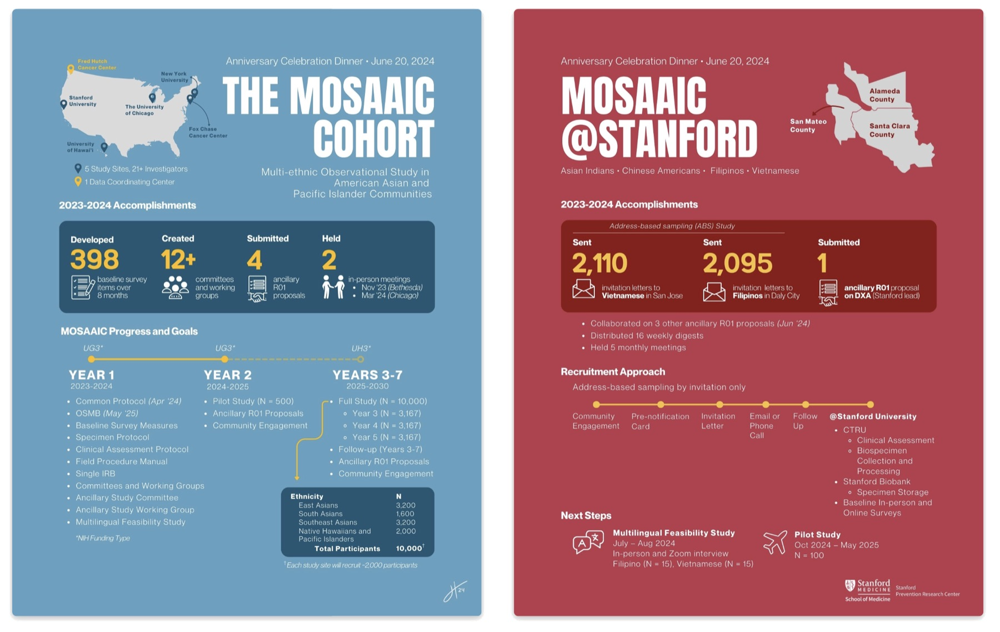
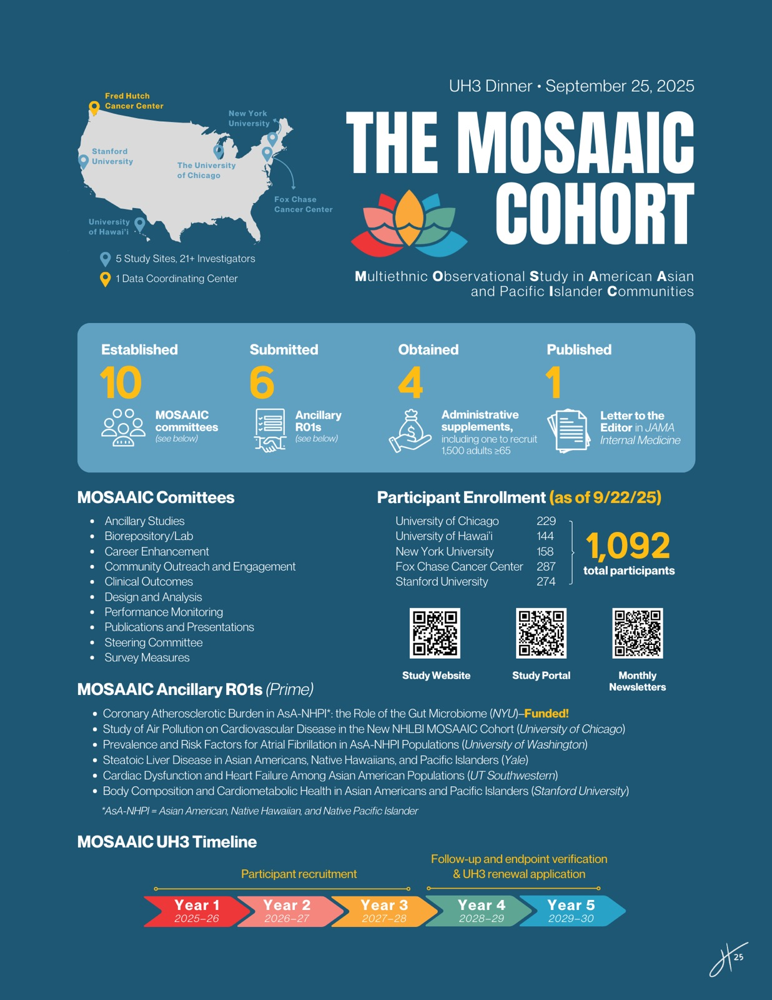
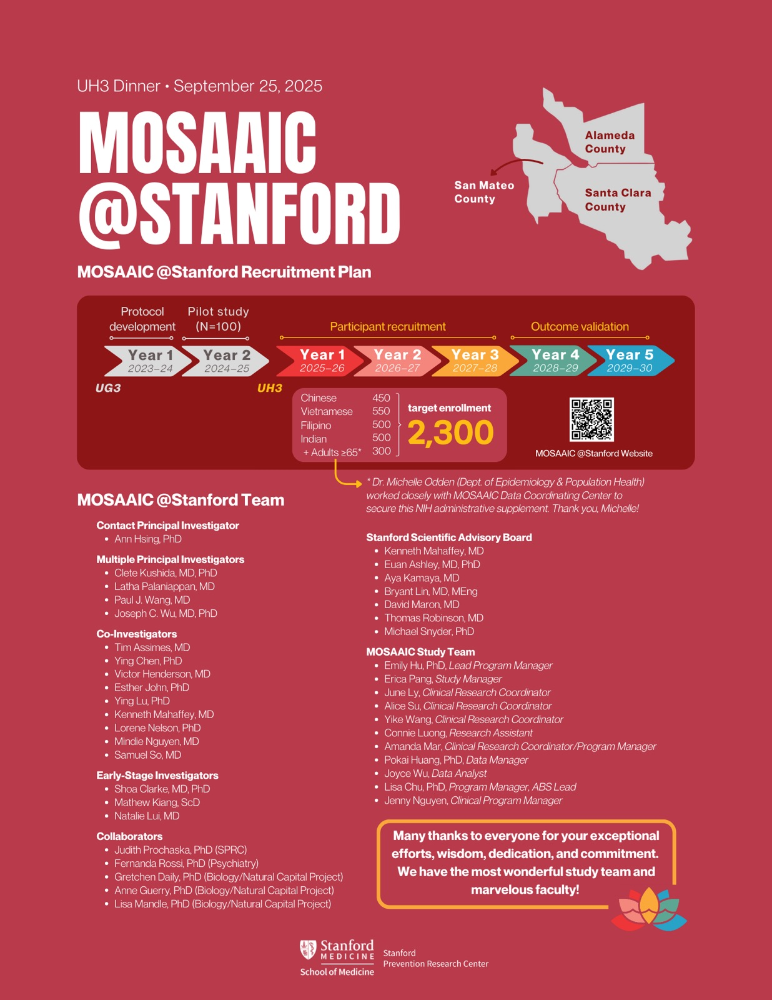
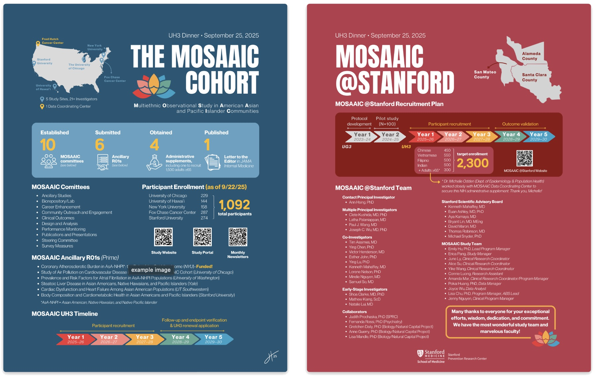

mosaaic cohort
infographics for the mosaaic anniversary celebration dinners
background: the National Heart Lung and Blood Institute (NHLBI) has launched an epidemiological cohort focused on Asian American, Native Hawaiian and Pacific Islander (NHPI) populations. It is called MOSAAIC — Multi-ethnic Observational Study in American Asian and Pacific Islander Communities. The study aims to understand cardiovascular disease in order to improve prevention in these understudied populations.
It takes place at six research institutions — the Fred Hutchinson Cancer Center in Seattle, the study’s coordinating center, and five clinical/community field centers: the University of Hawai‘i at Mānoa, Stanford University, the University of Chicago, the Fox Chase Cancer Center in Philadelphia, and NYU Langone Health / Perlmutter Cancer Center. Read more here.
I designed the infographics below, which summarize the study’s accomplishments, progress, goals, and recruitment approach, to be presented at the annual celebration dinners.
2023–2024 celebration dinner

2024–2025 celebration dinner


